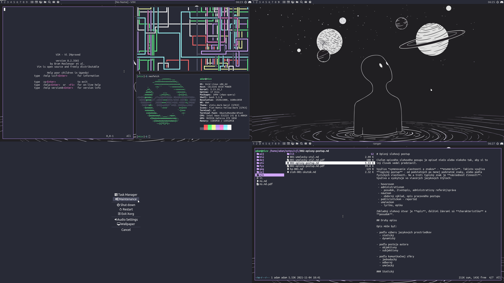

rice.zip [826M]
rice.zip [826M]fakt neviem ako toto písať po slovensky
Snažil som sa skompilovať čo "najkompletnejšie" prostredie s GTK témou, ikonkami, pomocníkom, viac ako 300 pozadiami, menu na vypnutie a update-ovanie počítača, ... Stiahnuť si ho môžete tu:
rice.zip [826M]